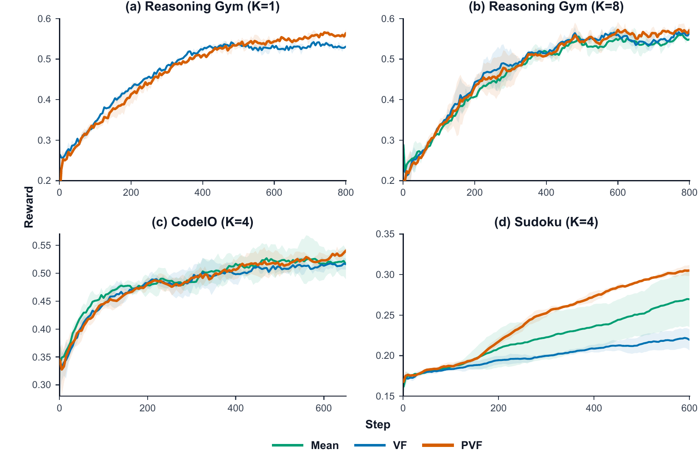
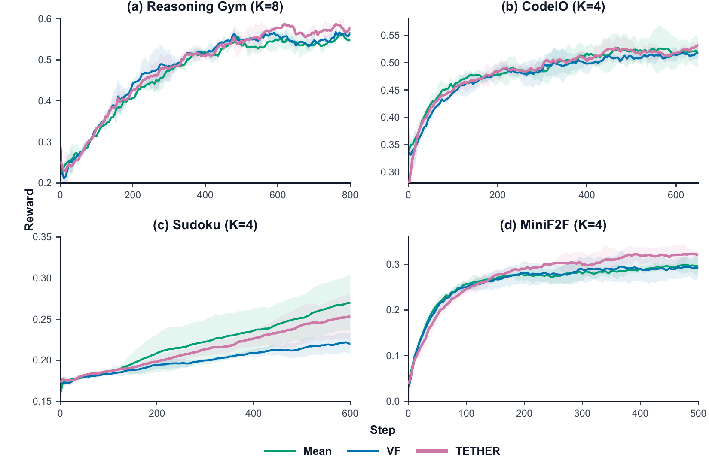
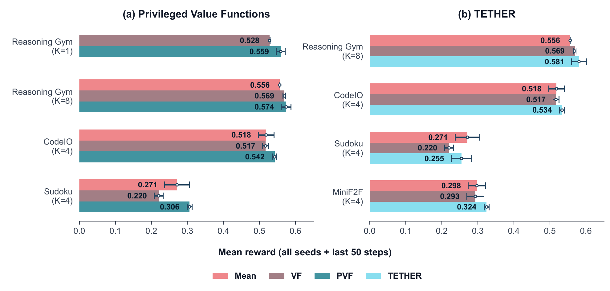

Privileged Value Functions
Route admissible training-time information through the critic to improve return prediction and reduce policy-gradient variance.
Correspondence: siddarth.venkatraman@mila.quebec
OVERVIEW
Group-relative methods such as GRPO avoid a learned critic, but they provide only sequence-level credit and require multiple rollouts per prompt. Learned value functions offer token-level advantages, yet a poorly fit critic can make training worse.
Le Critique develops two complementary strategies: Privileged Value Functions (PVF) give the critic useful context hidden from the policy, while TETHER adapts between the dependable group baseline and the learned token-level value baseline.
Route admissible training-time information through the critic to improve return prediction and reduce policy-gradient variance.
Fit an adaptive mixture of leave-one-out group and learned value baselines so the critic contributes only as much as its accuracy warrants.
METHOD 1
A PVF conditions on the ordinary policy history $h_{i,t}$ and additional critic-only context $z_{i,t}$. If this context is admissible, the stronger baseline can reduce variance while leaving the expected policy gradient unchanged.
Oracle answers, proof sketches, gold patches, or other fixed target information that helps judge a partial trajectory.
Other independently sampled responses and their rewards, turning value prediction into a relative in-context comparison.
Verifier rubrics, detailed task specifications, or latent environment information that satisfies the causal guardrail.
OBJECTIVE PRESERVATION
The extra information conditions an auxiliary value model. Under the admissibility condition and Monte Carlo advantages, it can reduce variance without changing the expected policy gradient or the original RL optimum.
Tradeoff: it cannot use feedback generated from the completed response itself.
The extra information shapes a teacher distribution and introduces a distribution-matching objective, typically a token-level reverse KL. This can change the policy optimum and requires careful information and stability control.
Advantage: it can directly exploit retrospective critiques or verifier feedback.
METHOD 2
TETHER starts from the reliable leave-one-out group baseline and moves toward token-level values only when the critic improves return prediction. The mixture coefficient $\rho$ is fit by least squares and smoothed across batches.
EXPERIMENTS
PVF is evaluated across three environments. TETHER uses the same suite, omits no-group Reasoning Gym, and adds MiniF2F.
A weighted mixture of procedural, single-turn reasoning tasks.
Single-turn program reasoning from inputs to outputs and outputs to feasible inputs.
A multi-turn environment where the policy reasons and fills one missing grid cell per turn.
A multi-turn Lean formal-mathematics task with compiler feedback across attempts.
RESULTS
Best performing method in all four PVF settings.
Improves over the ordinary value baseline in all four TETHER settings.



LE CRITIQUE
PVF strengthens token-level baselines with admissible context. TETHER keeps value functions connected to a reliable group baseline while the critic learns.